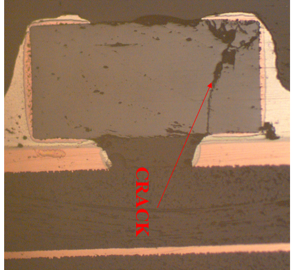

Objectives & Scope
- Localize board‑level leakage to specific MLCCs without global rework.
- Confirm internal cracks via NDT and destructive verification.
- Recommend layout/process mitigations for high‑strain regions.
Specimens & Constraints
| Assembly | Qty | Location | Notes |
|---|---|---|---|
| Board A | 8 | VRM output filter | High thermal cycles |
| Board B | 5 | Sensor front‑end | Mechanical shock exposure |
Equipment
- Precision probe station for node isolation/lift.
- LCR meter with guarded fixtures (IR/Cap/DF).
- Metallographic cross‑sectioning tools & optical microscopy.
Procedure
- Electrical isolation of suspect nodes; monitor IR at bias/temperature.
- Methanol soak test (NDT): observe time‑dependent C/IR shifts.
- Targeted cross‑section through dielectric and near terminations; document cracks.
Results & Observations
- IR degradation correlated with methanol exposure on several MLCCs.
- Cross‑sections show through‑dielectric cracks and edge chipping near terminations.
- Strongest correlation near stiffeners/connectors (strain concentration).
Root Cause: Assembly‑induced mechanical strain causing internal cracking of ceramic dielectric; exacerbated by layout constraints and handling.
Recommendations
- Re‑evaluate pad/land pattern; use flexible termination MLCCs in high‑strain zones.
- Tune reflow profiles; add post‑reflow handling SOPs and depanelization support.
- Add process IR checks on critical nodes after reflow & vibration.
Deliverables
- FA report with isolation schematics, IR trends, cross‑section imagery.
- DFMEA addendum with updated control plan for strain‑prone regions.
At a Glance
- SpecimensOn‑board MLCCs
- NDTMethanol Soak
- SignalIR Degradation
- Root CauseInternal Cracks

Fig. M1 — Dielectric crack crossing internal electrodes.